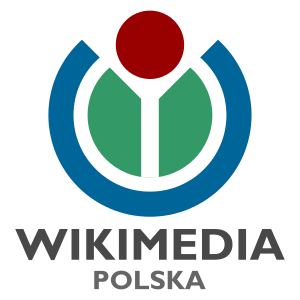
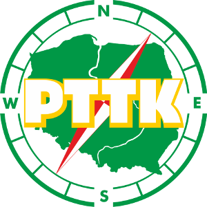
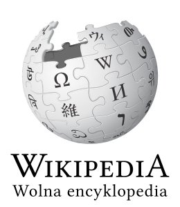

Wikiwakacje to otwarty konkurs fotograficzny, którego celem jest zgromadzenie zdjęć dokumentujących materialne i przyrodnicze dziedzictwo Polski. Zebrane fotografie posłużą wzbogaceniu Wikimedia Commons - zasobów multimedialnych Wikipedii. Fotografie należy nadsyłać od 11 lipca do 31 sierpnia 2016.
Dzięki konkursowi poszerzymy bazę zdjęć na wolnej licencji o cenne materiały ilustracyjne związane z polską naturą i kulturą. Posłużą one m.in. do zilustrowania haseł we wszystkich wersjach językowych Wikipedii. Konkurs stanowi połączenie dwóch wcześniejszych konkursów - Wiki Lubi Zabytki oraz Wiki Lubi Przyrodę, dzięki którym pozyskano ponad 100 000 dobrej jakości fotografii przedstawiających polskie zabytki i polską przyrodę.
W Polsce konkurs organizowany jest po raz pierwszy. Pieczę nad nim sprawuje Stowarzyszenie Wikimedia Polska. Partnerem konkursu jest Polskie Towarzystwo Turystyczno-Krajoznawcze.
Konkurs został zakończony, dziękujemy za udział. Nagrodzone zdjęcia znajdują się na blogu Stowarzyszenia Wikimedia Polska.
  
Masz pytanie? Jesteśmy do twojej dyspozycji.